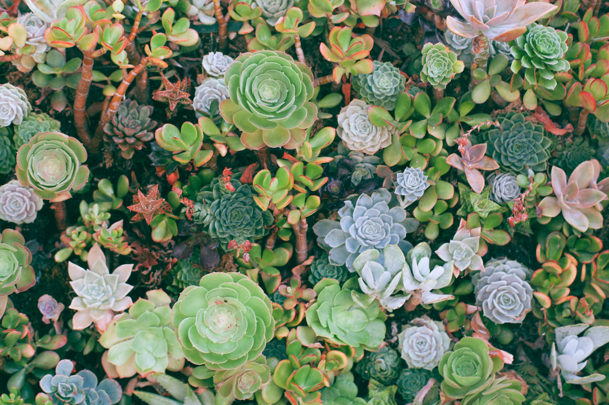

Suculentas são plantas adaptadas para armazenar água em suas folhas,
caules ou raízes, permitindo que sobrevivam em ambientes áridos e com
pouca umidade. Com formatos variados e folhas espessas, elas são
conhecidas pela resistência e pela beleza exótica, sendo ideais para
quem busca plantas de fácil cuidado e grande apelo decorativo.
Para escolher uma suculenta, observe seu ambiente: se houver bastante
luz natural, opte por espécies que amam o sol; em ambientes internos
ou com pouca luz, prefira suculentas que tolerem sombra. Verifique
também a firmeza das folhas, que devem ser espessas e sonoras, sem
manchas escuras ou sinais de apodrecimento. Por fim, considere o
tamanho que a planta pode atingir para se adequar ao espaço
disponível.